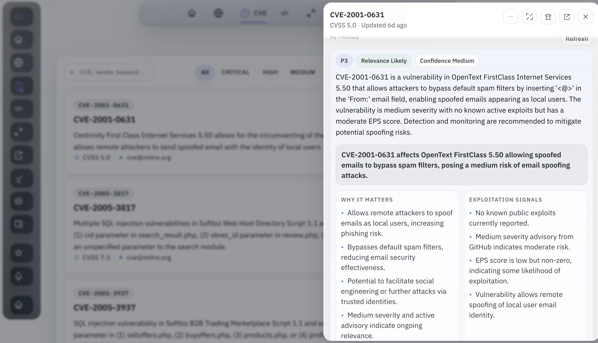
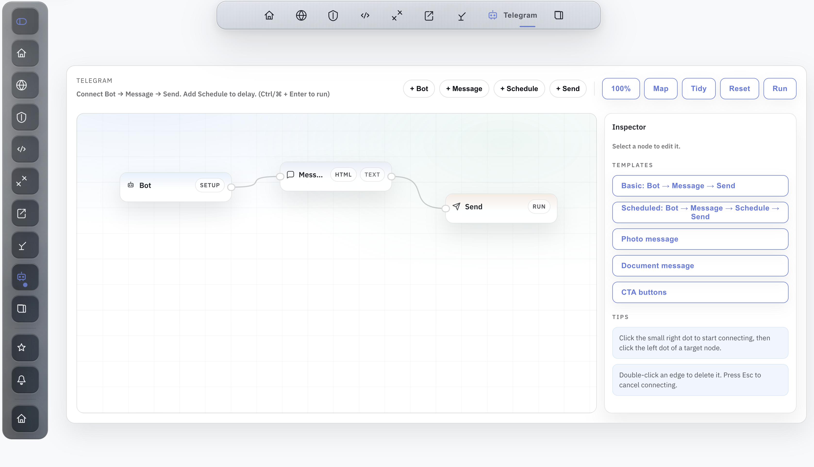

Vibin' Is Easy: It's All About Data and Design Now
Before AI, high-quality responsive SPA design usually meant bringing in a frontend engineer. That changed fast. Now the barrier is much lower, and almost anyone can work more full-stack when the data is strong and the design direction is clear.
Backend logic and automation were already straightforward. Wiring APIs, building the data layer, and getting a working tool online was not the bottleneck. The harder part was the last mile: making the frontend feel clear, responsive, and intentional on real screens instead of only functional in a local demo.
That changed once AI became good enough to accelerate iteration. A lot of responsive SPA work that would previously have required a dedicated frontend engineer is now much more accessible. The important part is not magic prompts. The important part is having strong inputs. If the data is weak, the result is weak. If the design direction is vague, the UI becomes generic. But if the data is solid and the product shape is clear, AI can close the gap between MVP and usable interface very quickly.
One example: security data
A good example is a security app built around CVEs, exploits, advisories, KEV, and related signals. None of that data is rare. A lot of it is already public on the internet. The hard part is not finding it. The hard part is turning it into something an analyst can scan fast, understand on desktop and mobile, and act on without reading five different sources every time.

That is where AI starts to feel practical. The layout can be described, refined quickly, and adjusted until the hierarchy feels right. Product decisions still matter. Review still matters. But the time from idea to presentable frontend is much shorter than it used to be.
Why AI triage fits this model
Vulnerability triage is a strong fit because the input data is already structured enough to work with. CVE records, exploit references, vendor advisories, and environment context can be merged into one view, then AI can help answer the questions an analyst actually cares about:
- What is this issue in plain language?
- Is there a real exploitability signal or is this mostly noise?
- Does it matter to our stack right now?
- What should we do next: patch, validate, detect, or escalate?

That is the real shift. AI is not only writing code here. It is also becoming an interface layer over real data. Once the evidence is collected and normalized, AI can summarize, prioritize, and draft action packs in a way that saves time without hiding the underlying sources.

Any CVE can become a workflow trigger
The other part that makes this interesting is that the same security record does not have to stop at a dashboard. Once a CVE or exploit is normalized, scored, and matched against a real environment, it can turn into an event. That event can send a Telegram message, open a ticket, schedule a follow-up, or kick off a workflow automatically.
The logic is straightforward. A trigger can fire when a new exploit appears, when a CVE lands in KEV, when EPSS jumps, when the issue matches the stack, or when AI triage marks it as urgent enough to notify a team. From there the app can route the result into a bot message, a scheduled escalation, or a larger playbook. The important part is that the trigger is based on evidence, not only a raw severity score.

That is what it means for AI to become an interface layer over data. It is not only summarizing the issue. It is helping move from signal to action. A good security product should not only explain why an item matters. It should help route that decision into the next operational step.
What changed
This does not replace strong frontend engineers. It does change what is accessible to backend, platform, and DevOps-heavy builders. The backend can be built, the product can be shaped, and the frontend can go much further than it could a year ago. For MVPs especially, that changes the speed of execution in a very real way.
The main conclusion is simple: high-quality, high-fidelity data is now the most important thing. AI can help shape the UI and speed up the build loop, but if the data is weak, stale, or noisy, the product will still feel weak. Good data first. Good design next. Then AI becomes useful.
Resume / CV: https://avkcode.github.io/resume.html.
Open to job opportunities. If you'd like to talk, email antonvkrylov@gmail.com.